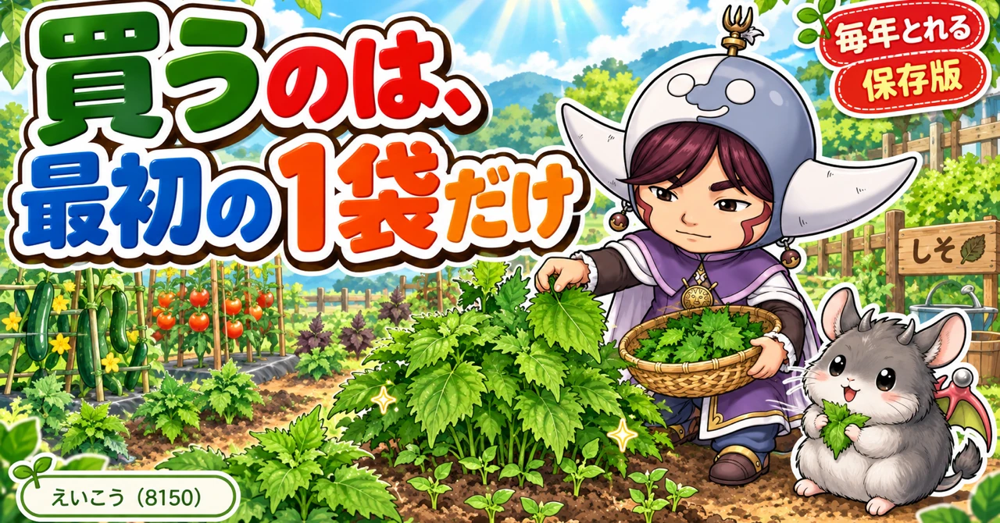
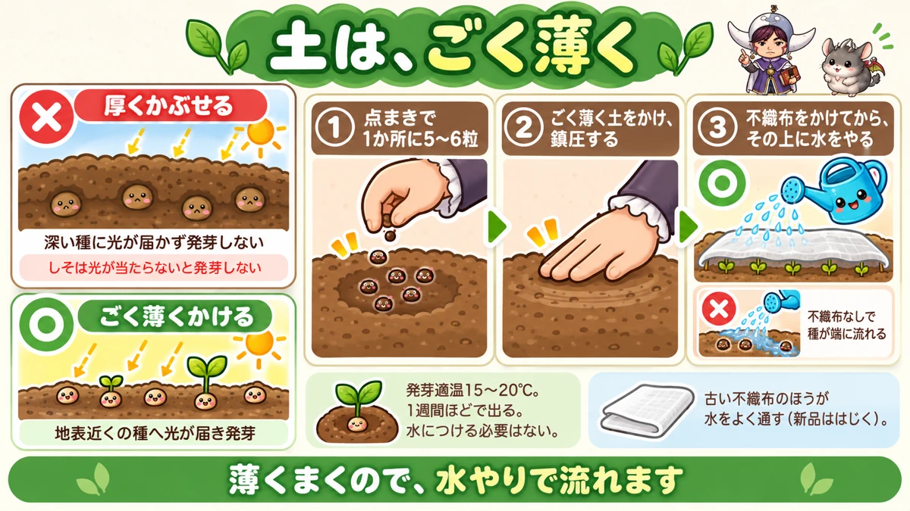
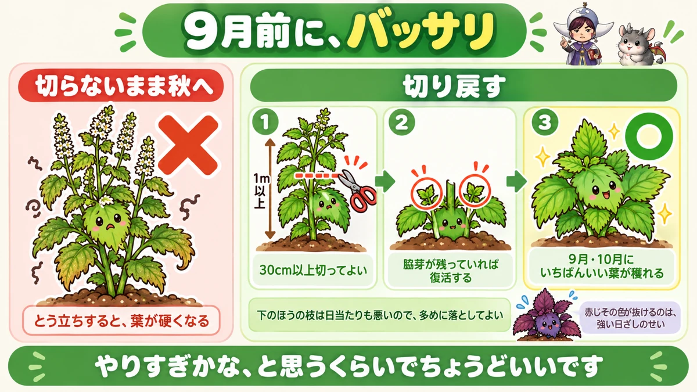
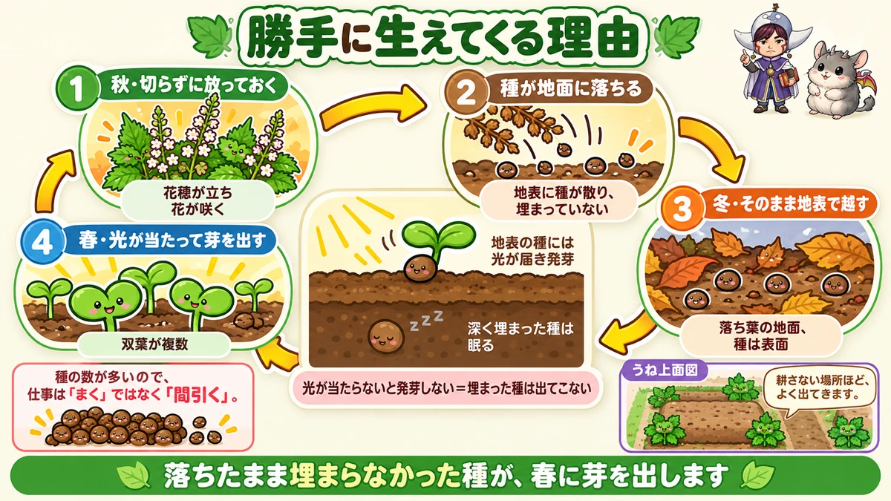

しその育て方｜毎年生えるこぼれ種の使い方、種まき、摘芯、夏の葉の立て直し

どうも、8150（えいこう）です🌱 家庭菜園歴8年、理科の教員免許を持っていて、有機・無農薬で野菜を育てています。
📖 この記事の目次
この記事で分かること
- 種まきは、薄い覆土と乾燥防止を組み合わせます。深く埋めることも、表面を乾かすことも避けます。
- 葉を繰り返し収穫するには、株の先端と葉の付け根にある芽を見て、枝を増やします。
- 夏の硬い葉には、乾燥、日差し、肥料の偏り、葉の古さを分けて対応します。
- 虫対策は葉裏と新芽の観察から。しその香りだけで食害を防げるとは考えません。
- 追肥や切り戻しの数字には複数の説明があります。土の履歴、株の状態、残りの生育期間を合わせて判断します。
- 秋は『葉を続ける』『穂を楽しむ』『種を残す』から目的を選びます。こぼれ種は、翌春の間引きまで予定に入れます。
しそは、葉を一度にまとめて採る野菜とは少し付き合い方が違います。必要な分を採りながら、次に使う枝と葉を育てていくんですよね。だから、今の一枚だけでなく、その下にどんな芽があるかを見ると、作業が選びやすくなります。
このページでは、種まきから秋の片づけまでを順番に整理しました。これから始めるみなさんは『早見』へ。育てている株の様子が気になるなら『失敗の見分け方』へ進んでください。全部覚えてから畑へ行かなくても大丈夫です。目の前の株に必要なところから読めばOKです☺️
中心に置きたいのは、『若い葉が出る環境を保ち、次の芽を残して収穫する』という考え方です。小さな株を急いで刈り込むのか、十分育った枝を整えるのかで、同じハサミでも仕事が変わります。まず今の段階を見分けましょう。
早見：しその育て方（ひと目で分かる数字）
種まき・苗・収穫の目安
- 種まきの時期：4月中旬〜5月の連休頃を目安にする説明と、一般地で霜の心配がなくなる4〜6月にまく説明があります。地域の冷え込みと手元の種袋の適期を確認します。
- 苗から始める時期：4月中旬以降に苗を用意し、夏野菜の植え付けに合わせる方法があります。売り場に並んだ日が、そのまま自分の畑の適期とは限りません。
- 直播きの粒数：一つのまき穴に5〜6粒という例です。発芽後も全部残すための数ではありません。
- ポット育苗の粒数：9cmポットで6〜7粒の例と、5粒の例があります。使う容器と種袋の案内を優先します。
- 覆土：種が隠れる程度の薄さ。約5mmの浅い穴を使う例もありますが、必ず5mmの厚さで土をかぶせる指定とは区別します。
- 発芽温度：栽培解説には15〜20℃説と20〜25℃説があります。二つをつないで『15〜25℃なら同じ条件』とは扱いません。
- 発芽まで：約1週間という説明と1〜2週間という説明があり、8日で出た育苗例もあります。冷え込みや乾燥で変わる目安です。
- 苗の植え付け：育苗箱から移す方法では、本葉4〜5枚が目安です。苗選びの実演には高さ10〜15cm、葉5枚ほどの株が登場しますが、その寸法だけで良否を決めません。
- プランターの間引き：最初3〜4cm、次に5〜6cm、最後20cmにする説明があります。育苗中の一時的な間隔と、育て続ける株の間隔を分けます。
- 畑の株間：40cm以上を確保する説明があります。枝を横へ広げる栽培の一例で、鉢の20cmという説明と同じ条件ではありません。
- うね幅：一律の数字はありません。株間、枝の広がり、収穫する手の届き方を先に考えます。
- 混植の配置：約2m離して点々と植える例があります。ほかの野菜のうね端を使う配置の話で、しそだけを育てるときの標準株間ではありません。
- 通常の摘芯：草丈20〜30cm、約30cm、30〜40cmで葉8〜10枚ほど、という説明に分かれます。高さだけを一つに決めず、枝を増やせる株の充実度も見ます。
- 収穫開始：本葉10枚以上を目安にする説明があります。播種から約60日前後という説明もありますが、すべての地域に共通する日数ではありません。
- 収穫する月：6〜10月、6月中旬〜8月、剪定を続けて7〜9月という異なる例があります。秋前の切り戻しで9〜10月の新葉をねらう方法もあります。
- 元肥：植える前に土の履歴を見て準備します。元肥を入れた土で追加を控える説明があり、どの土でも最初から無肥料という意味ではありません。
- 追肥：生育がよければ省く方法、摘芯後から3〜4週間ごとに行う方法、1〜2か月ごとに行う方法があります。回数の平均値を作らず、自分の栽培条件に合わせます。
- 夏の更新：7月中旬〜後半に強く切る説明と、秋前に枝を整える説明があります。8月後半の強い剪定では再生が間に合わない場合も挙げられています。
- 連作の間隔：材料には、必ず何年あけるという年数はありません。同じ場所のこぼれ種を使う方法はありますが、毎年の生育や土の状態を確認することまで省略しません。
数字を使う前に、条件をそろえる
この早見は、数字だけを抜き出して一つの栽培法にするための一覧ではありません。例えば、育苗箱で苗を選ぶ3〜4cmと、大きく育てる畑の40cm以上は、両方とも株の間隔でも使う段階が違います。小苗の間隔のまま夏まで置く計画にはしないでください。
種まきの月も同じです。4月にまく方法を選んだとして、夜に冷え込む場所なら保温や待つ判断が必要になります。逆に苗を買って始めるなら、種からの発芽待ちや育苗に使う時間を、すでに苗が経過しているわけです。同じ開始日でも、収穫の予定はそろいません。
- 種か苗かを決めた
- 地域の霜と夜の冷え込みを確認した
- 畑か鉢か、ほかの野菜と混ぜるかを決めた
- 前に何を育て、どのくらい肥料を使ったか確認した
- 葉を採る株と、秋に種を残す株の予定を分けた
最初はここまでで十分です。細かい温度や日数は、実際の発芽や生育と照らし合わせて使いましょう。種袋に書かれた地域別の適期がある場合は、それも一緒に確認してください。別の条件の数字を足し合わせると、しそより先に予定表が大きくなっちゃいますね💦
作業の手順（時期の順）
1．春の前に、育てる目的と場所を決める
- 普段の料理に葉を少しずつ使うのか、若い芽を食べるのか、秋の穂や種まで利用するのかを決めます。
- 種から始めるなら、発芽まで水分を見られる場所を用意します。少数の株で早く収穫したいなら、苗も選択肢です。
- 畑では、ほかの野菜の枝と重ならない場所を選びます。混植なら、うねの端でも後から大きくなることを考えます。
- 夏の強い日差しと、水やりできる頻度を確認します。日差しを和らげられる場所も候補に入れます。
- こぼれ種を使いたい場合は、翌春に芽が増えても管理できる場所か確認します。借り農園は利用規則を先に見ます。
種袋には多くの種が入ることがありますが、それを全部大株に育てる必要はありません。家庭菜園では2〜3株でも葉を利用できるという説明があります。株数より、食べる量と世話できる場所から決める方が続けやすいです。
余った種や間引き菜を若い芽として使うなら、大きく育てる区画と分けて考えましょう。同じしそでも、芽を採る場所では早めに収穫し、葉を採り続ける場所では枝を育てます。目的が先に決まると、『たくさん出たから全部残そう』を避けやすくなります。
2．種まき前に、土と水の通り方を確認する
- 前作に何を育てたか、元肥や追肥をどのくらい使ったかを振り返ります。
- 雨のあとに水が残る場所を確認します。ぬかるむ場所では、植える前に排水を考えます。
- 種をまく表面を整え、細かい種が一か所へ流れ込まないようにします。
- 肥料を使う場合は、製品の表示と土の履歴を合わせます。複数の栽培法の配合量を足しません。
- 水を細かく、穏やかにかけられるように準備してから種をまきます。
しそを少ない追肥で育てる話はあります。ただ、その出発点が、元肥を入れた場所なのか、前の野菜の肥料が残る場所なのかで意味が違います。『追肥しない』という結論だけ借りて、土の準備まで省くと条件がずれます。
ここでは、資材を一律に何L、何gと組み合わせる配合表は置きません。元肥の量は、説明によって大きく違います。確かな量として読めない数字を、便利な目安に見せないためです。
種が小さいからといって、表面を強く固める必要もありません。後で水が届き、芽が出る場所を整える作業です。水がしみ込まず流れるなら、まいた後に水量を増やすより、まく前の表面と水のかけ方を見直します。
3．種を薄くまき、発芽まで乾燥を防ぐ

- 直播きなら、一つの場所へ5〜6粒という例を目安にします。ポットなら5粒の例と6〜7粒の例があります。
- 土は種が隠れる程度に薄くかぶせます。種を深い穴の底へ落とさないようにします。
- 土との接触を整えます。軽く押さえる説明と、押さえつけない説明があるため、強い圧力で固める作業にはしません。
- 不織布を使う方法では、先にかけてから、その上へゆっくり水を注ぎます。
- 布の上がぬれただけで終わらず、下の土へ水が届いたか確認します。
- 発芽待ちの間は、表面の乾きと夜の冷え込みを見ます。常に水浸しにするのではなく、乾き具合に合わせます。
しその種は、光を受けることが発芽に関係する『好光性種子』です。土を厚く盛ると、その条件を損ねます。一方、光を当てたいからといって、裸のまま乾かしてよいわけでもありません。光と水分の両方を考えるところが、種まきの小さな難所ですね。
不織布には、水の勢いで浅い種が動くのを抑える役割があります。新品は水が通るまで時間がかかり、使い込んだものの方が通りやすいという実演例もあります。ただ、古いものなら何でも同じという話ではありません。目の前の布と土を見て、水が届いているかを確かめます。
新聞紙で乾燥を防いだ育苗例もあります。この方法を使うなら、何枚も厚く重ねたものへ勝手に広げず、発芽の様子を見られる状態で管理します。保護材を置いたら、土を見なくてよくなるわけではありません。
事前に水へ浸けなくても発芽させる方法があるので、浸水を必須の準備にはしません。まずは、種の表示、薄い覆土、水分、温度をそろえましょう。準備を増やすことより、まいた後の条件が続くことが大切です。
4．芽が出たら間引き、苗を選ぶ
- 芽が出た場所を確認し、極端に密集した部分を見つけます。
- 育苗箱の例では、種を1〜2cmほどの間隔でまき、発芽後に3〜4cmへ間引きます。
- プランターの例では3〜4cm、5〜6cm、最後20cmへ、成長に合わせて間隔を広げます。
- 弱い株や混み合った株を整理し、残す苗が育つ場所を作ります。
- 間引いた健全な苗は、若い芽として利用するか、必要な場所へ移す候補にします。
間引きは、せっかく出た芽を無駄にするように感じるかもしれません。でも、葉を大きくする区画に、小苗の密度のまま残し続ける方があとで困ります。最初に多めにまくことと、最後まで多く育てることは別の予定です。
若い芽を食べる利用は『芽じそ』と呼ばれます。大きな葉になるまで待つだけが収穫ではないので、残す苗と食べる苗を分けると、間引きにも役目ができます。ただし、傷みや異常のある苗を、食べられる前提でまとめて扱わないようにします。
こぼれ種から出た芽にも同じ作業が必要です。自然に発芽した苗は、植える場所まで自然に決めてくれるわけではありません。ほかの野菜の根元や通路へ出た株は、そのまま大きくしてよいかを見て整理しましょう。
5．苗を植え、枝を広げる余裕を残す
- 苗の茎の太さ、葉の色、下の方の芽を見ます。背丈だけ伸びた株より、茎が丈夫な苗を候補にします。
- 育苗箱から移す方法では本葉4〜5枚を目安にします。購入苗も、葉の傷みや虫を確認します。
- 畑で葉を採り続けるなら、株間40cm以上という説明を参考に、枝の広がりを見込んで配置します。
- ほかの野菜と混植するときは、その野菜の株間を守り、しその枝が重なる場所を避けます。
- 植えた後は土の乾きと苗の様子を見ます。冷え込みや強風がある日は、保護や植える日の変更を考えます。
うね端へ約2mずつ離して植える話は、ほかの野菜が主役の場所へ点々と入れる配置です。しそ専用の区画でも全部2mあける、という指定ではありません。ここを混ぜると、必要な場所が急に広くなってしまいます。
鉢の栽培では、土が限られることも見込みます。ただし、材料だけでは最小容量や鉢の号数を一律に決められません。20cmという間引きの目安があっても、容器の深さや大きさがどれでもよい意味にはしないでください。
6．株が育ったら、先端を摘んで枝を増やす
- 草丈だけでなく、葉が増えて株が育っているかを見ます。
- 20〜30cmで行う説明、約30cmで行う説明、30〜40cmで葉8〜10枚ほどを目安にする説明を、自分の株と照らします。
- 枝の先端と、その下の葉の付け根を見ます。付け根の小さな芽が、次に伸びる脇芽です。
- 残す芽を確認してから、先端の成長点を軸ごと切ります。葉一枚をつまむだけの作業とは分けます。
- 脇芽が伸びて枝になったら、その枝にも残す芽を見つけ、先端の収穫を繰り返します。
『摘芯』は、枝先の伸びる部分を取って、脇の芽を育てる作業です。しそを上へ一本伸ばし続けるより、横にも枝を作る方向へ整えます。名前は難しそうですが、見る場所は枝の先と葉の付け根。そこが分かれば、ハサミを入れる理由も見えてきます。
高さの数字は、どこで切るかをすべて決めてくれるものではありません。例えば30cmに届いていても、切り口より下へ次の芽が残るかを確認します。物差しで高さを測り、芽を見ないまま切ると、欲しい枝の出発点まで失いかねません。
先端を採ったあとは、新しい芽の伸び方を見ます。毎回同じ長さで切るのではなく、その枝に次の芽がある位置を選びます。しそを全部同じ形へそろえることより、次の収穫につながる枝を残す方を優先しましょう。
7．普段の収穫と、夏の水分管理を続ける
- 本葉が増えて収穫できる株になったら、料理に使う葉を選びます。本葉10枚以上を目安にする説明があります。
- 葉を一枚ずつ採る場合は、若さや傷みを見て選びます。下葉から採る説明と、柔らかい葉を選ぶ説明があります。
- 葉の表面を強く握らず、軸を持って採ります。伸びた枝の先端を採る作業も組み合わせます。
- 土の表面だけで決めず、必要に応じて深さ3〜5cmほどの乾きも見ます。
- 水が必要なときは、朝夕の涼しい時間帯を選びます。鉢では、畑と同じ回数で足りると決めつけません。
- 葉裏と新芽を見て、虫、糸、変色、葉の傷みがないか確認します。
葉が欲しいからといって、出ている葉を毎回すべて取る予定にはしません。若い芽や残した枝から次の葉を育てる時間も必要です。葉だけを取り続けて株が細くなる場合には、先端の収穫と枝作りの組み合わせを見直します。
真夏は、強い日差しで葉が硬くなることがあります。水分を確認しても葉焼けや硬化が続くなら、日差しを和らげる場所や遮光を考えます。日陰に置けば全部解決という話でもないので、新葉の出方と風の通り方も一緒に見ましょう。
葉を洗うときは、強くもみ続けず、傷めないように扱います。香りを残したいからといって、必要な洗浄まで省く意味ではありません。採るときも洗うときも、葉を手荒に扱わない、というくらいで覚えると分かりやすいかなと思います。
8．夏の葉が傷んだら、切り戻すか判断する

- 葉が硬い、小さい、虫食いが増えた、香りが弱くなったなど、更新したい理由を確認します。
- 土の乾燥、強い日差し、肥料の偏り、虫を先に見ます。原因が続いたまま切る予定にしません。
- 今の時期と花芽の有無を確認します。新しい枝を伸ばす期間が残っているかを考えます。
- 切る前に、下の方の脇芽を見つけます。切り口より下へ芽を残す位置を選びます。
- 株に合う範囲で枝を短くし、傷んだ葉や内側へ混む枝を整理します。
- 切った後も水分と芽の伸びを確認します。追肥は、切ったから自動的に行う作業にはしません。
通常の摘芯は枝を増やすため、更新の切り戻しは傷んだ葉を新しい葉へ替えるための作業です。材料には、葉10段のうち下5段ほどを残す例、茎を3分の1程度から半分ほど短くする例、7月に半分以上切る例があります。別の秋前の方法では、1mを超す枝を30cm以上詰めています。
これらを平均して『いつでも半分』とはしません。7月の強い更新と、秋に向けた枝の整理では、残る時間が違います。8月後半に強く切っても、伸び直す前に花が付く場合があります。暦だけでなく、下に残る芽と株の状態を見て選びます。
切ったあとに若い枝が伸びれば、その葉を収穫へ戻します。ただし、一定の日数で必ず回復する約束はしません。乾燥が続く株、芽を残せなかった株、秋が近い株を、元気な盛夏の株と同じ見込みで待たないことが大切です。
9．秋は、葉・穂・種の行き先を分ける
- 葉を採り続けたい株は、出てきた花芽を早めに整理する方法を選びます。
- 穂や花を使いたい株は、その部分を残して育てます。葉の収穫だけを基準に全部摘みません。
- 種を残す株は、開花後の穂を育て、種が成熟するのを待ちます。
- 採種の例では穂の粒の中を確かめ、種が黒くなった段階で採ります。白い段階はまだ早いとされています。
- 株上で完全に枯れて散る前に穂を採り、風の通る日陰で乾かす方法があります。
- こぼれ種を使う場所でも、周囲へ増えて困らないかを確認します。借り農園では、散らす前の片づけを優先します。
葉、穂、種の全部を、同じ枝から同じ時期に最大限採ることはできません。花芽を取れば、その部分の花や種へ進む道も減ります。『今年は葉を長く』『ここは種用』と株や枝の役割を分けると、秋の作業が矛盾しにくくなります。
自家採種を続ける場合でも、翌年に親と同じ色や香りになるとは限りません。近くで違う性質のしそなどを育てると、次世代の性質が変わる可能性が挙げられています。元の性質を重視するなら、翌年も由来の分かる種や苗を選ぶ方法があります。
最後は枯れた株だけでなく、種が落ちる場所まで見ます。春に生えたら嬉しい場所と、通路や隣の区画のように困る場所は別です。秋の片づけまでが、翌春の種まきの準備になっているんですよね。
失敗の見分け方（症状→原因→やること）
種をまいたのに、芽が見つからない
- 症状：まいた場所に芽が出ない、または端の方だけに固まって出ます。
- 考えられる原因：覆土が厚い、表面が乾いた、冷え込みが続いた、水で種が移動した、保存した種の状態が悪いなどです。
- やること：まいた日と天候を確認し、土の厚さ、水の届き方、芽が出た位置を調べます。まき直す場合は薄い覆土と穏やかな水やりへ変えます。
発芽の目安には約1週間と1〜2週間があります。7日で見えなかったからといって、すぐ全体を掘り返す判断にはしません。冷えた夜があったか、表面が一度でも乾いたかを先に振り返ります。
端へ集まって出ているなら、種そのものが悪かったというより、水で動いた可能性を考えます。次は水の勢いを弱め、保護材を使う場合は、その下まで穏やかに水が届くようにします。『芽が少ない』と『場所がずれた』を分けると、直す作業も変わります。
苗がびっしり生え、大きくなりにくい
- 症状：小さな苗が密集し、葉を広げる余地がありません。
- 考えられる原因：多めにまいた種がそのまま残っている、こぼれ種が集中した、若い芽用の密度で大株を育てようとしているなどです。
- やること：育て続ける株を選び、成長段階に合う間隔へ間引きます。残す位置が悪ければ、移植も候補にします。
この段階で肥料を追加しても、株の間隔は広がりません。まず、横へ枝を伸ばす空間があるかを見ます。鉢の間引き例にある3〜4cmは、最後まで育てる間隔ではありません。段階を進めるための一時的な目安です。
こぼれ種は、ほかの野菜の予定と無関係に芽を出します。去年ここにあったから今年も全部残す、と決めず、今年の作付けに合わせて整理してください。自然に出た株も、残すかどうかはみなさんが選べます。
葉が硬く、ぱさついている
- 症状：大きな葉がごわつく、端が傷む、食べたときに柔らかさがありません。
- 考えられる原因：葉を採る時期が遅い、強い日差しや乾燥が続いた、肥料が多い、花芽が増えているなどです。
- やること：新葉と古葉を比べ、土の乾き、日当たり、施肥の履歴、花芽を確認します。原因を整えたうえで、若い葉の収穫や切り戻しを選びます。
古い葉だけ硬いのか、新しい葉まで小さく硬いのかで、見る場所が変わります。古葉だけなら収穫のタイミングを見直す材料になります。新葉まで悪いなら、その株が今置かれている環境を見ます。
日差しを和らげたからといって、すでに硬くなった葉がすべて柔らかく戻るとは扱いません。立て直しの目標は、次に出る葉の状態です。古い葉を見続けるより、新しい枝と葉がどう変わるかを確認しましょう。
葉色が薄く、伸びが鈍い
- 症状：株全体が黄緑から黄色に見え、新しい枝も伸びにくくなっています。
- 考えられる原因：肥料不足のほか、乾燥、根の不調、病気、古葉の変化などが候補です。
- やること：変色が古葉だけか株全体かを分け、土の水分と排水、葉裏の異常を見ます。不足が疑われるときに、現在の栽培法に合う追肥を検討します。
『黄色い＝肥料を足す』だけで判断しないでください。土が乾いている株へ肥料だけ足しても、水分不足を解決する作業にはなりません。水が残る場所で元気がない場合も、まず根が働ける環境を見る必要があります。
下の古葉だけが黄色く、上では新葉が育っているなら、株全体の不調と分けます。傷んだ古葉を整理し、残した芽が育っているかを見ましょう。葉一枚の変化で、その株全部を同じ診断にしないことが大切です。
濃い葉が波打ち、苦みやえぐみが気になる
- 症状：葉が濃緑で、巻く、波打つ、ごわつくなどの変化があります。
- 考えられる原因：肥料が多い場合が挙げられます。ただし、変形や食味の変化だけで一つの原因に決めません。
- やること：元肥と追肥の量、回数、前作の残りを確認します。追加施肥を急がず、乾燥や虫の症状も調べます。
柔らかい葉が欲しいから肥料を増やす、という発想は、この症状では逆に働く場合があります。材料には、窒素が多い状態と硬さやえぐみを結びつける説明があります。見た目の緑が濃ければ、食べる葉もよい状態とは限らないんですね。
一度に複数の対策を変えると、どれが効いたか分からなくなります。まず不要な追加を止め、土の乾きや虫を確認する。そのあとに出てくる葉を比べる順にすると、次の判断材料が残ります。
葉裏が白っぽく、新葉も傷む
- 症状：葉裏が白っぽい、光って見える、細かな虫のようなものがいます。
- 考えられる原因：高温で乾燥する時期のハダニ被害が候補です。見た目だけで確定せず、葉裏を調べます。
- やること：朝夕の涼しい時間に葉裏を水で洗い、ひどく傷んだ葉を整理する物理的な対策を検討します。新葉と周りの株も続けて観察します。
ハダニは小さく、葉の表側だけ見ていると見逃しやすい相手です。梅雨明け後に乾燥が続いたら、葉を裏返す確認を増やしましょう。穴がないから虫はいない、という判断にはしません。
葉裏を洗う作業と、根へ水を届ける水やりは目的が違います。葉をぬらしただけで、鉢やうねの土も十分湿ったとは限りません。反対に、土へ水をやっただけで葉裏の確認が済むわけでもありません。
葉に大きな穴が増える
- 症状：葉があちこち欠ける、小株で食べる部分が少なくなる、日に日に穴が増えます。
- 考えられる原因：バッタなど葉を食べる虫が候補です。夜に食害する幼虫もいるので、穴の形だけで虫の種類を決めません。
- やること：株と周りを見て虫を探し、見つけたものを除去します。ネットを使う場合は、先に中の虫を確認し、株が伸びる余裕と隙間を見ます。
バッタは7〜9月頃に被害が増える例があります。しその香りがあっても葉を食べます。香りのある植物なら虫が来ない、という期待を外して、実際の食害を基準にしてください。
背が高い株へ低いネットを押しかぶせると、枝がつかえます。枝を整えてから設置する方法もありますが、強い切り戻しができる時期かを先に確認します。ネットの都合で、秋の株を急に丸坊主にする予定にはしません。
新葉が糸でまとまり、中に幼虫がいる
- 症状：若い葉が縮れ、糸でつながり、内側に幼虫や食害があります。
- 考えられる原因：葉を巻いて隠れる幼虫の被害が考えられます。
- やること：糸のある葉を開いて確認し、幼虫がいる被害葉を早めに除きます。株のほかの新芽も見ます。
この症状では、葉の変形を肥料の問題だけにしないことが大切です。まず糸や食べ跡があるかを見ます。害虫名を確定できなくても、虫がいる葉を見つけて除く作業は選べます。
若い芽の中へ隠れる虫は、遠くから眺めるだけでは分かりにくいです。収穫のついでに枝先を確認すると、見つける機会を作れます。『今日は葉を採る日だから観察は別の日』と分けなくても大丈夫です。
小さい株に早く花芽が付いた
- 症状：葉が十分増える前に、枝先へ花の穂が出てきます。
- 考えられる原因：時期による日長の変化、高温、乾燥、肥料不足が挙げられます。一方、肥料過多の株で早い花芽が出た説明もあります。
- やること：葉を続けたいのか、穂や種へ進めたいのかを決めます。葉を優先する時期なら花芽を整理し、土の乾きと施肥履歴を見直します。
花芽が出たから肥料不足だ、と自動的に足さないでください。肥料が多い側の説明もあるためです。花芽の有無だけでは、肥料を増やすか減らすかは決まりません。
秋が近い場合は、葉の栽培を延ばす方法にも限界があります。穂や花を香り付けに使う、採種へ切り替える、区画を片づける、という選択肢もあります。花が出たこと自体を、全部の利用が終わった合図にはしません。
切り戻したあと、芽が伸びない
- 症状：枝を短くしたものの、収穫できる葉が増えません。
- 考えられる原因：残した脇芽が少ない、乾燥などの不調が続いている、切った時期が遅い、すでに花へ進みやすい段階などです。
- やること：切り口の下の芽、土の湿り、花芽を確認します。追加の強剪定や追肥を繰り返す前に、回復を待てる株かを判断します。
切った長さが同じでも、残る芽の数と時期は違います。7月に元気な株を切った話を、秋の弱った株へそのまま当てはめないことが大切です。再生が見込めないなら、今ある健全な部分を利用し、片づけへ進む判断もあります。
説明が分かれていること
発芽温度は15〜20℃か、20〜25℃か
- Aという説明：栽培解説では、15〜20℃を発芽の適温として、春の気温上昇を見ながらまきます。
- Bという説明：別の栽培解説では20〜25℃を適温とし、夜間15℃以下なら室内へ取り込む育苗方法を示しています。
- どう考えればよいか：温度の範囲を平均せず、種の表示と育苗環境を合わせます。日中だけ暖かい場所では、夜の温度も確認します。
二つの説明に共通して出てくる20℃付近も、そこなら必ず発芽する保証ではありません。覆土、水分、種の状態がそろっているかも必要です。温度だけを当てて、乾燥している表面を見落とさないようにしましょう。
薄くまいた後は、押さえるのか押さえないのか
- Aという説明：薄く土をかけたあと、軽く押さえて種と土を密着させます。
- Bという説明：別の育苗方法では、種が隠れる程度の覆土をし、押さえつけないとされています。
- どう考えればよいか：どちらも強く固める指示へ変えません。用土や水分の違いもあるため、選んだ種まき方法の流れに合わせます。
『押さえる』の一語だけでは、力加減まで分かりません。密着を整える程度の作業と、表面が固くなるほど圧縮する作業は違います。芽が出る場所を潰さず、水をかけても種が移動しにくい状態を目標にします。
摘芯は20〜30cmか、30〜40cmか
- Aという説明：草丈20〜30cmになった株の成長点を摘みます。約30cmを目安にする説明もあります。
- Bという説明：草丈30〜40cm、葉8〜10枚ほどになった段階で摘芯します。
- どう考えればよいか：単に20〜40cmへ広げて一つの目安にはしません。株が育ち、切る位置の下に脇芽が残るかを確認します。
高さが目安になるのは、作業する段階を探しやすいからです。ただ、背が高い株と、枝や葉が十分ある株はいつも同じではありません。実物の葉の付け根を見れば、残したい芽の位置を確かめられます。
追肥は省くのか、定期的に行うのか
- Aという説明：元肥を入れた土で、株がよく育っていれば追加を控えます。切り戻し後も生育に問題がなければ追肥を省く方法です。
- Bという説明：摘芯時に最初の追肥をし、その後3〜4週間に一度行う方法があります。別の方法では1〜2か月ごと、生育が旺盛なら2か月ごとです。
- どう考えればよいか：土の蓄積と前作、元肥、葉色、新葉の伸びを合わせます。頻度を足し合わせたり、間を取って一律に月1回にしたりしません。
元肥のあと数年間追加しなくてよいという強い説明もありますが、その話には準備した土という前提があります。どんな鉢や畑でも数年間何も見なくてよい、とは読まないでください。
反対に、定期追肥の予定がある場合でも、濃緑で硬い葉やえぐみが気になる株へ、日付だけを理由に追加する判断は見直します。予定は株を観察するきっかけに使うと、作業を選びやすくなります。
花芽は肥料不足で付くのか、過多でも付くのか
- Aという説明：高温、乾燥、肥料不足、日が短くなることを、花芽が出やすい条件として挙げています。
- Bという説明：肥料の多い土で育った小株に、早い花芽と硬い葉が出た栽培例があります。
- どう考えればよいか：花芽だけを肥料診断に使いません。季節、水分、葉の状態、実際に入れた肥料を調べます。
両方を並べて『不足も過多も必ず花を付ける』という新しい法則にするのも違います。条件がそろわない説明を、一つの確定原因へまとめないための整理です。摘芯の負担が花芽へ影響したのではないかという説明もありますが、単独の推測を一般的な仕組みとして断定しません。
切り戻しの深さと時期は、同じではない
- Aという説明：葉が10段ほどある株で下の5段を残す、茎を3分の1程度から半分まで短くするなど、株の形を見て整えます。
- Bという説明：7月中旬〜後半に半分以上切って夏の葉を更新する方法があります。秋前には、1m以上伸びた枝を30cm以上詰める説明もあります。
- どう考えればよいか：通常の収穫、盛夏の更新、秋前の整理を分けます。共通して守るのは、切り口の下へ次の脇芽を残すことです。
『9月の前なら、どの株も深く切れば戻る』という覚え方にはしません。材料には8月後半では再生が間に合わない場合もあります。月が似ていても、地域と株の状態、花芽の段階が違えば結果は変わります。
水やりは週1回か、毎日か
- Aという説明：畑では梅雨明け前、土が極端に乾かない限り水やりを省ける場合があります。
- Bという説明：最低週1回、雨がなければ1日1回という方法や、真夏に1日2回を挙げる説明があります。
- どう考えればよいか：雨、土質、畑か鉢かを確認し、土の乾きを基準にします。回数は異なる環境の実例として読みます。
朝に水をやっても午後に乾く暑い日の観察例があります。逆に、雨が続く土へ毎日追加すれば、乾燥対策とは別の問題を作ります。昨日の回数を守るより、今日の土を触って判断する方が、しその状態へ近づけます。
下の芽を残すか、風通しのために整理するか
- Aという説明：下の脇芽も枝になるため、取ると収穫量を減らす可能性があります。
- Bという説明：混み合った下部を整理し、風を通して虫や病気の確認をしやすくする方法があります。
- どう考えればよいか：下の芽を全部取る、全部残すの二択にはしません。健全な芽を残し、古葉や内向きの枝、傷んだ部分を見て整理します。
収穫量を増やしたい目的と、株の中を見やすくする目的が重なっています。葉の数だけ多くても、中が見えず被害に気づけなければ困ります。株の状態を見ながら、何を残すかを選びましょう。
しその混植は、虫よけになるのか
- Aという説明：独特の香りによる虫の忌避を期待し、ほかの野菜の脇に植える方法があります。
- Bという説明：混植を試しても、虫が来て効果をあまり感じなかった栽培例があります。
- どう考えればよいか：確実な防虫策として数えません。配置は採りやすさや枝の広がりで決め、必要な観察と虫対策を続けます。
しそ自身を食べるバッタや幼虫がいるので、香りが強いことと、すべての虫が避けることは同じではありません。植えた結果を観察し、効果が分からない場合でも、葉を収穫する野菜として利用できる配置にすると無理がありません。
よくある質問
種と苗、初めてならどちらが始めやすいですか
少数の株を育て、早く葉を使いたいなら苗が候補です。
種からなら、発芽管理と間引きの時間を予定に入れます。
余った種や間引いた苗を芽じそとして使う方法もあるので、食べたいものと世話できる時間で選べます。
プランターでも育ちますか
プランターで間引きながら育てる方法があります。
最後の間隔を20cmにする説明はありますが、どんな大きさの容器でもその間隔ならよいという指定ではありません。
枝が広がる余裕と、夏に土の乾きを確認できるかを見てください。
種は水に浸けてからまく必要がありますか
浸けずにまいて発芽させる方法があるため、必須にはしません。
先に確かめたいのは薄い覆土、水分、温度、種の状態です。
手元の種に専用の案内がある場合は、その表示も確認します。
一袋の種が全部発芽しないと失敗ですか
全部が出ることを前提にしません。発芽率は種のロットや保管状態でも変わります。
材料にある60%以上という表示例も、どの袋にも共通する保証ではありません。
極端に少ないときは、深まきや乾燥、温度、水による移動を調べます。
葉だけを取っていれば、枝は増えますか
枝を増やす作業では、先端の成長点を軸ごと摘みます。
葉一枚の収穫と同じ作業ではないため、枝先と脇芽を見て区別してください。
伸びた脇枝も、次の芽を残す位置で先端を収穫していきます。
葉が硬いときは、肥料を足せばよいですか
追加の前に、葉の古さ、乾燥、強光、花芽、施肥履歴を見ます。
肥料が多い場合にも硬さやえぐみが挙げられるため、硬い葉だけでは不足と判断できません。
若い葉の状態まで比べて、対応を選びましょう。
花が出たら、すぐに株を抜きますか
葉を続けるか、穂や花を利用するか、種を残すかで変わります。
葉を優先する時期なら花芽を整理する方法があります。
秋に穂や種を楽しむなら、必要な部分を残して栽培の目的を替えられます。
赤じその葉が緑っぽくなったら、交雑ですか
強い日差しのあとに赤みが弱くなった観察例もあります。
今ある株の色の変化だけで、交雑が原因とは決めません。
同じ夏に起きた葉の変化と、自家採種した翌年の株の性質の違いを分けて考えます。
こぼれ種があれば、毎年種を買わずに済みますか
翌春に出た苗を育てる方法はありますが、発芽や性質が毎年同じになる保証ではありません。
増えた苗の間引きと、残す場所の整理も必要です。
同じ色や香りを重視する場合は、由来の分かる種や苗を用意する選択肢があります。
しそは多年草として冬を越しますか
この栽培での『毎年生える』は、前年の種から次の株が育つことです。
同じ一株を何年も育て続けているわけではありません。
翌春に小さな苗が出たら、前年の株の復活と区別します。
前年に買った種は使えますか
種の寿命には約1年という説明と、シソ科で1〜2年という説明があります。
どちらも、保管条件を問わず全粒が発芽する期限ではありません。
袋の表示と保存状態を確認し、何年も残す計画より早めに使う方を考えます。
しそを植えたら、防虫ネットは要りませんか
香りの虫よけ効果は一律に保証できません。しそを食べる虫もいます。
被害が続く場所では、捕獲やネットなどを別に考えます。
ネットを使った後も中の虫と葉裏を見て、枝の成長に合わせて余裕を確認します。
学ぶ：しその発芽と枝の育ち方のしくみ🔬

発芽に必要な光と、夏の日焼けは別の話
しそでは、種が発芽するときに光を受けることが関係します。これが『好光性』です。深く埋めない種まきには、その条件を残す意味があります。
ただし、発芽に光が関わることから、真夏の成株へ強い日差しを当て続ける方がよい、と話をつなげません。種が芽を出す段階と、大きな葉を柔らかく育てる段階では、見ている現象が違います。
夏の成株には、強光で葉が硬くなったり傷んだりする例があります。種は浅く、夏の葉は強光や乾燥を避ける。この二つは矛盾ではなく、育つ段階に合わせた管理です。
薄い覆土には、水分の確認がついてくる
浅い種は、水の勢いを受けると位置が変わりやすくなります。薄い覆土にしたのに発芽場所がずれたら、光の条件だけでなく、水のかけ方も振り返る理由になります。
覆土を厚くすれば種が動きにくく見えても、今度は発芽の条件を変えてしまいます。そこで、土を厚く盛る以外の方法として、水を穏やかにかけたり、不織布を介したりします。
発芽管理では、光を確保することと乾燥させないことを同時に考えます。『浅いから乾いても仕方ない』で終わらせず、表面の湿りと芽の変化を見ます。小さい種の管理ほど、ほんま細かな観察が役に立ちますね。
脇芽を見れば、切った後の枝が想像できる
枝の先には、その枝を伸ばす成長点があります。葉の付け根には脇芽があり、摘芯したあとにそこから枝が伸びる様子を観察できます。
先端を摘む作業では、その下の芽を次の枝として残します。だから、葉一枚を採ることと、枝先の成長点を取ることを区別する必要があります。名前を覚えるより、同じ枝の先端と葉の付け根を見比べる方が分かりやすいです。
夏の切り戻しでも、次の枝になる芽を残す考え方は共通です。切る長さが違う例でも、脇芽を残す説明が繰り返されています。切り口だけを見ると『短くなった』ですが、その下の芽を見ると『次はここから育つ』へ見方が変わります。
切った直後の形と、その後に伸びる枝の形を比べてみてください。同じ高さまで切った株でも、芽の位置が違えば枝の出方は変わります。株を一律の寸法へそろえるより、実物の芽を確かめる理由がここにあります🔬
こぼれ種では、同じ場所に次の世代が育つ
秋に花が咲き、種ができ、その種が地面へ落ちます。翌春以降に発芽した苗は、その種から育った次の世代です。同じ場所にしそがあるので一株が長生きしているように見えても、株は入れ替わっています。
地表近くに落ちた種は、深く埋まった種とは光の条件が違います。浅まきの話と、こぼれ種から芽が出る話はここでつながります。ただし、光だけで翌春の発芽を全部説明するものではありません。温度、水分、種の状態も関係します。
耕したかどうかで種の深さが変われば、芽が出る場所も変わる可能性があります。でも、耕さなければ必ず毎年出るとは言いません。材料にも、こぼれ種苗を4月に移した例と6月頃に芽を見つけた例があり、時期に幅があります。
種がたくさん落ちると、翌春に苗が密集します。ここまでを一続きで見ると、秋に種を残す判断と春の間引きが同じ計画になります。種まきの手間が減る代わりに、苗を選ぶ仕事が増えるんですよね。
葉を採る株と種を採る株では、残す部分が違う
葉を長く利用したい場合は、花芽を整理する方法があります。種を得たい場合は、花を残し、その後の穂を成熟させます。株がどの段階へ進むかで、残す部分の役目が変わります。
採種では、受粉を助ける訪花昆虫にも役割があります。葉を食べる虫への対策と、花に来る昆虫の扱いを、虫という名前だけで一緒にしないことが大切です。
防虫ネットで葉を守る時期の管理と、種用に花を残す時期の管理には、目的の違いがあります。虫を見つけたら全部同じ対処、と決める前に、食べ跡があるのか、花へ来ているのかを見てください。実物の働きを分けると、管理の理由も分かりやすくなります。
まとめ
しその栽培は、『発芽まで表面を乾かさない』『次の脇芽を残して枝を作る』『夏の葉の変化を見て環境を整える』を軸にすると、作業を整理できます。
これから始めるみなさんは、次の項目を確認してみてください。
- 種か苗かを選び、地域の霜と種袋の適期を確かめる
- 種は薄く覆土し、水で動かないか、土まで水が届くかを見る
- 間引きと株間を、若い苗の段階と大株の段階で分ける
- 枝先を採る前に、その下の脇芽を見つける
育っている株で困ったときは、次の順で見ます。
- 古葉だけの変化か、新葉にも続く変化かを比べます。
- 土の乾き、日差し、葉裏の虫、施肥の履歴を確認します。
- 水分や光、食害への対応を選び、更新するなら時期と残す芽を確かめます。
- 秋は葉、穂、種のどれを優先するか決め、片づけと翌春の間引きまで予定に入れます。
追肥を省く方法と定期的に行う方法、盛夏に強く切る方法と秋前に整える方法は、前提が違います。数字の中間を取るより、自分の株がどの状態に近いかを見てください。切れば必ず戻る、香りがあれば虫を防げる、といった一つの答えに任せない方が、作業を選びやすくなります。
ここまで読んでくださって、ありがとうございます。今日ひとつ見るなら、収穫したい枝の葉の付け根をのぞいてみましょう。そこに次の芽が見つかると、『どこを採って、どこを残すか』が具体的になります。目の前のしそと相談しながら進めるくらいで、大丈夫です🌿
防虫ネット
しそはバッタに食われます。柔らかい葉を穫りたいなら、かけておくほうが確実です。
![[商品価格に関しましては、リンクが作成された時点と現時点で情報が変更されている場合がございます。]](https://hbb.afl.rakuten.co.jp/hgb/56bc205d.0066fedc.56bc205e.af56d163/?me_id=1260467&item_id=10000299&pc=https%3A%2F%2Fthumbnail.image.rakuten.co.jp%2F%400_mall%2Fmarsol-morishita%2Fcabinet%2Fshouhinn%2Fbouchuu%2Fimgrc0090950099.jpg%3F_ex%3D240x240&s=240x240&t=picttext "[商品価格に関しましては、リンクが作成された時点と現時点で情報が変更されている場合がございます。]")

液体肥料
摘み取りながら長く穫るので、薄い追肥を続けると葉が硬くなりません。
![[商品価格に関しましては、リンクが作成された時点と現時点で情報が変更されている場合がございます。]](https://hbb.afl.rakuten.co.jp/hgb/56bc2da1.2bf36c6e.56bc2da2.7b66fad7/?me_id=1347284&item_id=10000008&pc=https%3A%2F%2Fthumbnail.image.rakuten.co.jp%2F%400_mall%2Fmandahakko%2Fcabinet%2Fsyokubutsumanda%2F260306_smn_amn5004.jpg%3F_ex%3D240x240&s=240x240&t=picttext "[商品価格に関しましては、リンクが作成された時点と現時点で情報が変更されている場合がございます。]")
プランター
こぼれ種で増えすぎるので、畑よりプランターのほうが管理しやすい野菜です。